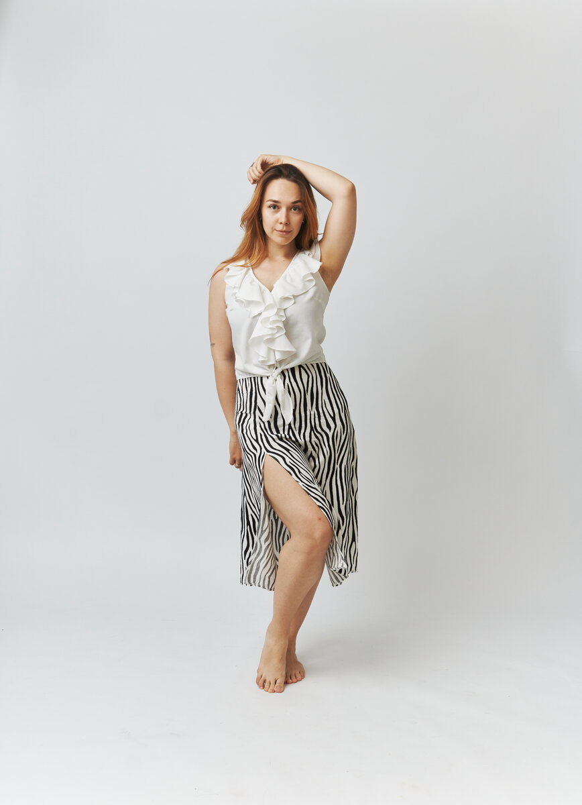

Правка тела · Екатеринбург
Комплексная работа с телом — для женщин, которые хотят чувствовать себя лёгкими, живыми и восстановленными.
Обо мне
Меня зовут Катя. Интерес к телу и его поддержке рос во мне долго — но по-настоящему всё изменилось во время беременности и после родов.
Я сама прошла курс правки живота и тела, занималась мягкой йогой, подвязывала живот бенкунгом — делала всё, чтобы с любовью вернуть себе ресурс. И удивилась, что большинство женщин об этом даже не знают.
Сейчас я практикую правку тела и помогаю женщинам заботиться о себе — информационно, морально и физически.

Услуга
Комплексная работа, которая сочетает несколько техник и инструментов. Не просто «погладят» — а реальное внимание к вашему телу и запросу.
Классический, тайский и миофасциальный массаж — в сочетании, подобранном под вас.
Банки, массаж сухой щёткой, колючий мячик, суставная гимнастика.
Улучшает гормональный фон, снижает болезненность во время цикла, поддерживает работу ЖКТ.
Диагностика перекосов, зажимов, застоев. Последовательность подбирается под ваш запрос.
Длительность и состав процедуры обсуждаем индивидуально. Работаю с женщинами без серьёзных проблем со здоровьем.
Записаться →Отзывы
Реальные сообщения после сеансов — с разрешения авторов.
«Пришла с зажимом в шее, ушла без зажимов и максимально расслабленной. После массажа было не только физическое облегчение, но и эмоциональное расслабление. Не часто встретишь специалиста, который максимально рассказывает о своём процессе, детально обсуждая зоны. Однозначно рекомендую!»
«Самое главное — это результат: уже после одного раза спина визуально стала ровнее, прошёл кашель, который раньше возникал когда я начинала говорить. Дышать стало легче и перестало болеть правое плечо.»
«Чувствуется твоё внимание, приятная женская забота в процессе. Рада, что такой ценный специалист женских практик появился в моём окружении — буду рекомендовать девчонкам с большой радостью!»
Как проходит сеанс
Напишите мне — обсудим ваш запрос, состояние здоровья и выберем удобное время.
Визуально и тактильно определяем проблемные зоны: перекос таза, плеч, лопаток, зажимы в ягодицах, диафрагме, животе.
Подбираю техники и последовательность под ваш запрос. Комментирую то, что делаю — вы всегда понимаете, что происходит с вашим телом.
Уходите расслабленной — телесно и эмоционально. При необходимости даю рекомендации по домашнему уходу.
Запись
Напишите мне в Telegram — отвечу быстро, обсудим всё в удобном темпе.
@KatyaPravit